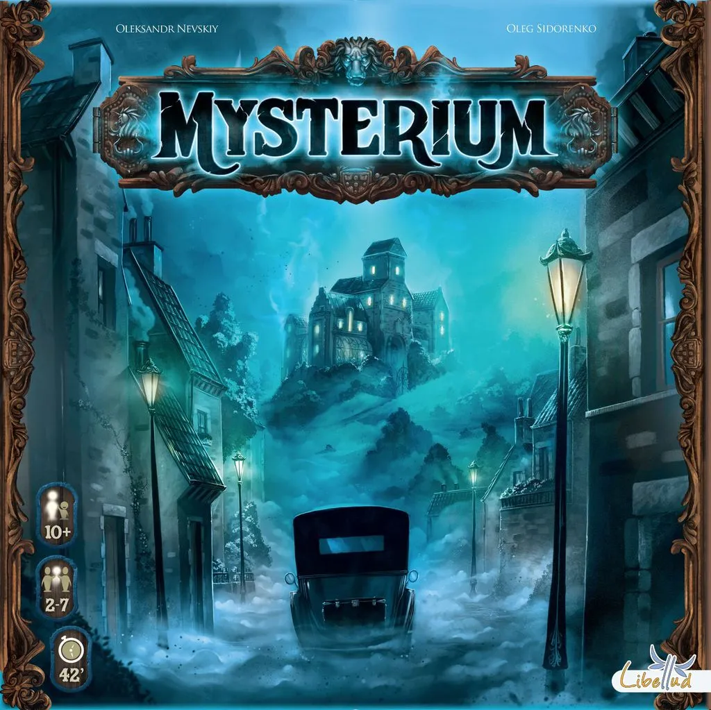
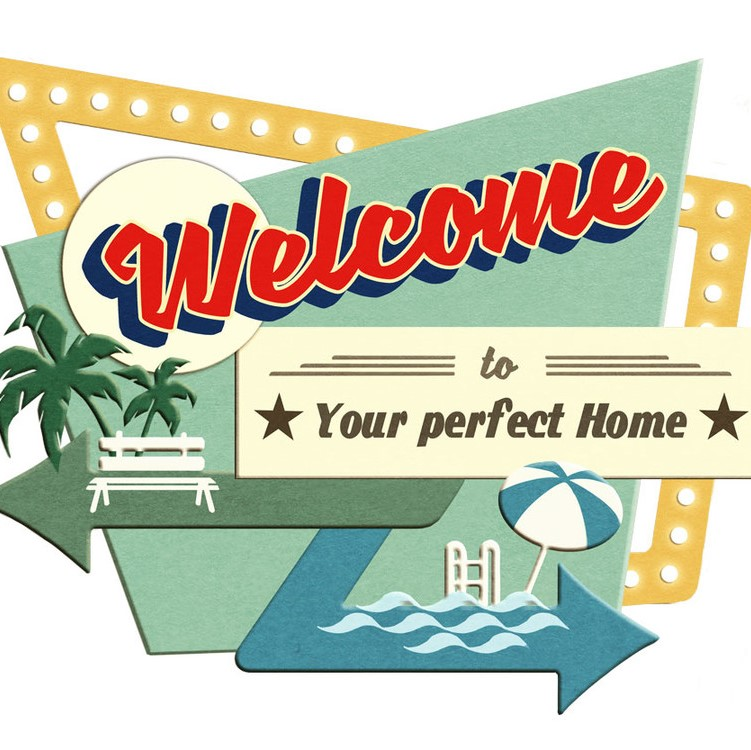

2 jeudis par mois, les Tirlibibis et leurs guest stars se retrouvent à Malbex pour
une soirée jeux de société. Toute sorte de jeux sont proposés, du petit jeux de dés
aux gros jeux de stratégie. S'il y a beaucoup de monde ou des personnes intéressées
par différent jeux, il est possible de faire plusieurs tables.
Les jeux les plus apréciés

Dans Mysterium les joueurs sont unis dans le but de découvrir les circonstances
et le responsable d’un mystérieux meurtre ayant eu lieu dans le manoir de Warwick.
Carcassonne est un jeu de pose de tuiles et de placement d’ouvriers simple et accessible
recelant néanmoins une grande profondeur stratégique. C’est un jeu à mettre entre toutes les mains.
Catane, c’est le jeu qui a fait découvrir au monde tout ce qui fait le sel des jeux de
société modernes : une mécanique fluide et bien pensée, des règles simples, des parties courtes pour un jeu de stratégie.

Incarnez un architecte cherchant à construire les meilleures rue en selectionnant à chaque tour une
action parmi un tirage identique pour tous les joueurs. Faites les bons choix de numéros de maison et remplissez les rues.